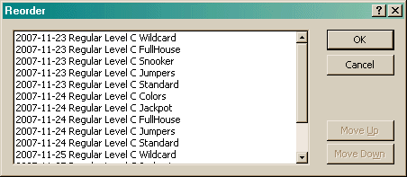

The Reorder Dialog allows you to reorder the runs in a trial.

While this dialog allows you to move any run into any position, it is important to note that the runs will be sorted by date. So the reordering only works in regards to a specific date.